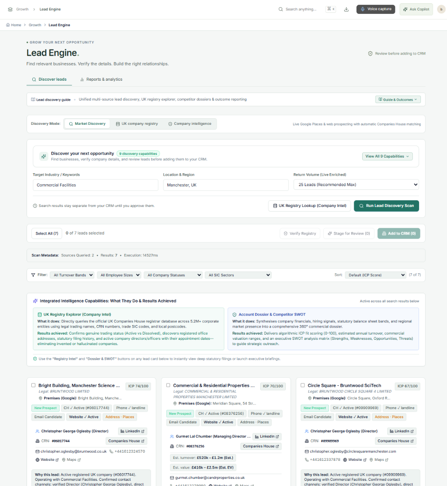

Where is the right talent?
Map relevant employers, roles and talent pools to inform a focused search.
- Talent and employer mapping
- Regional search context
- Candidate pipeline visibility
AI-ENABLED COMMERCIAL INTELLIGENCE
Practical visibility of talent, verified UK decision-makers, and commercial opportunities—powering specialist search and growth partnerships.
START WITH THE DECISION
We define what you need to understand, then combine verified registry data, platform capabilities and human judgement.
Map relevant employers, roles and talent pools to inform a focused search.
Research accounts and decision-makers around your target territory.
Bring clearer structure to the activity around your commercial priorities.
PRODUCTION INTELLIGENCE SUITE
Inspect the five core modules of the Power-Up Intelligence platform. Below are the exact operational explainers, commercial ROI metrics, and fiduciary guardrails derived directly from our live system.
Live visibility of open commercial pipeline (£6.8M+ tracked in real-time), weighted win probabilities, deal velocity, and priority agendas. Eliminates stale offline spreadsheets.
Real-time revenue forecasting, pipeline velocity, weighted deal conversion & priority agendas. Eliminates stale offline spreadsheets.
Provides managing directors and commercial leaders with instant board-level revenue predictability, live deal tracking, and whitespace account expansion.

People, key decision makers, and communication logs.
Track time to find and update a customer record. Compare overdue follow-ups, duplicate records and opportunity conversion.
Clear steps for completing work in this section. Review results before moving to the next action.
Maintains accurate stakeholder profiles, communication channels, and interaction histories, ensuring sales and account teams always reach the right person.

Unified multi-source lead discovery, UK registry explorer, competitor dossiers & outcome reporting.
Track research time per qualified opportunity. Measure verified contact coverage and qualified leads becoming deals.
Clear steps for completing work in this section. Review results before moving to the next action.
Accelerates outbound pipeline generation by automating lead discovery while strictly enforcing the Zero-Fake Data policy, consent checks, and human-in-the-loop validation.

AI teammates with business tools, live research and governed routines.
Measure time per successfully completed task, including review. Track failed runs, corrections, response time and provider cost.
Clear steps for completing work in this section. Review results before moving to the next action.
Accelerates team execution velocity, operational transparency, and revenue predictability.

Configure inbound AI receptionist, voice numbers, and call logs.
Measure time per successfully completed task, including review. Track failed runs, corrections, response time and provider cost.
Clear steps for completing work in this section. Review results before moving to the next action.
Ensures 100% UK GDPR data sovereignty, strict human authorization before canonical CRM updates, and multi-tenant isolation.

PRACTICAL BY DESIGN
Focus the conversation on hiring priorities, leadership coverage, margin leakage, and the whitespace opportunities relevant to your growth plan.
Explore target-account research, verified director contacts, local market visibility and practical follow-up workflows.
Explore employer mapping, candidate pipelines and visibility across the search process.
THE NEXT CHAPTER
Tell us what you’re building, where you’re stuck, or who you need.
We’ll start with the right conversation.